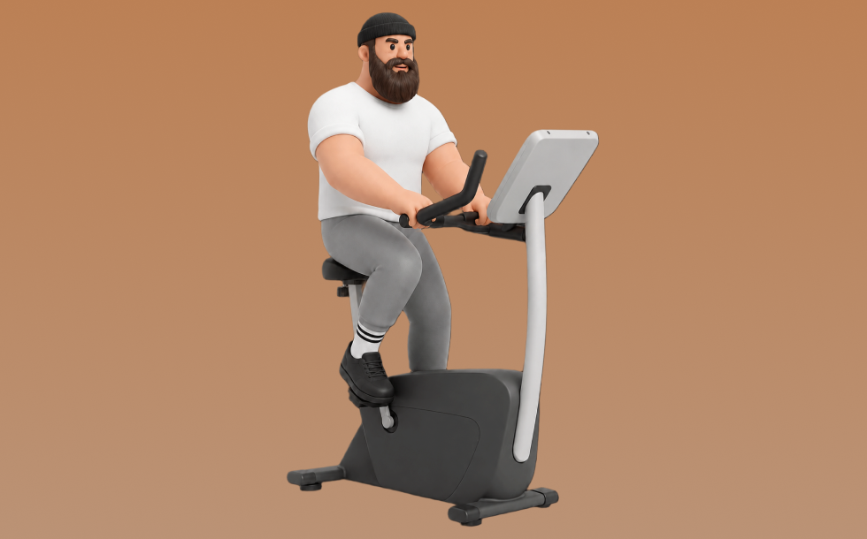

エアロバイク

エアロバイクとは、マシンを使って「ペダルをこぐ」動作を行い、主に下半身と心肺機能を鍛える有酸素トレーニングです。関節への衝撃が少なく負荷調整しやすいのが特徴で、一定リズムでペダリングを繰り返します。これにより、持久力向上や脂肪燃焼が期待できます。
- 対象部位
- 有酸素
- 器具
- マシン
- 記録形式
- 時間
- 別名
- エアロバイク / フィットネスバイク / スピンバイク / stationary bike / exercise bike / fitness bike / spin bike / bike cardio
YouTube動画
-
【効果倍増】フィットネスバイクのプロに学ぶ効果的な使い方5選
-
【エアロバイク】part1 せめて効率良く脚の筋肉くらい使おうよ @healthunionoda506
-
スピンバイク（STEADY）の効果的な漕ぎ方を専門家に教わってみた
-
[意外と知らない]エアロバイクの正しい使い方 | 現役トレーナー伝授
-
フィットネスバイクをがんばっても痩せないNGな漕ぎ方５選
-
マラソンが早くなる！ジムでできるエアロバイクトレーニング
-
フィットネスバイクで効果が出るまでの期間
-
【有料級】家トレで痩せたい人必見！ダイエットに効果的なフィットネスバイクの漕ぎ方を専門家にお聞きしました！【スピンバイク】
-
膝のリハビリ＆減量を両立させるフィットネスバイクの漕ぎ方
-
魔法教えます！「お尻に効くバイクの乗り方」有酸素マシン編【トレーニングマシン】
-
【足痩せ】フィットネスバイクで脚を太くしない漕ぎ方のコツ５選
-
初めてエアロフォームに挑戦する時のコツと注意点
-
【ジムトレ】何が違うの？フィットネスバイクの種類と効果を解説～背もたれあり・なしバイクを使い分け～
-
平坦で30km/hを維持するためのフォームとポジション
-
楽しく脂肪燃焼！音楽にのって痩せる本格サイクルトレーニング 24分
-
アップライトバイクの基本的な使い方
YouTubeショート
-
エアロバイク
-
【誰でもわかるマシンの使い方】エアロバイク編#shorts
-
誕生日でも爆走するカズハ#shorts #lesserafim #kazuha #カズハ #有酸素運動 #ランニングマシン #ウォーキング #お腹痩せ #韓国ダイエット #韓国美容 #ダイエット
動作方法
- ウォームアップで心拍を段階的に上げる
- 目的に合わせてペースを設定する
- 終了後はクールダウンで整える
動作ポイント
- 呼吸を止めない
- 開始直後に追い込みすぎない
ワンポイントアドバイス
- 体調に合わせて時間や強度を調整する
- ペースより継続を優先する
目的別回数設定
目的や体力に応じた一般的な目安です。無理のない範囲で調整してください。
- 筋力アップ
- 高強度 20〜60秒
- 筋肥大
- 中強度 10〜20分
- 持久力アップ
- 低〜中強度 20〜60分
YouTube動画について
動画はYouTubeの公開情報をもとに表示しています。内容は投稿者によるもので、Biggrによる監修ではありません。
アプリを入手
筋トレやトレーニングの記録はBiggrにお任せください。今すぐ無料で使い始められます。